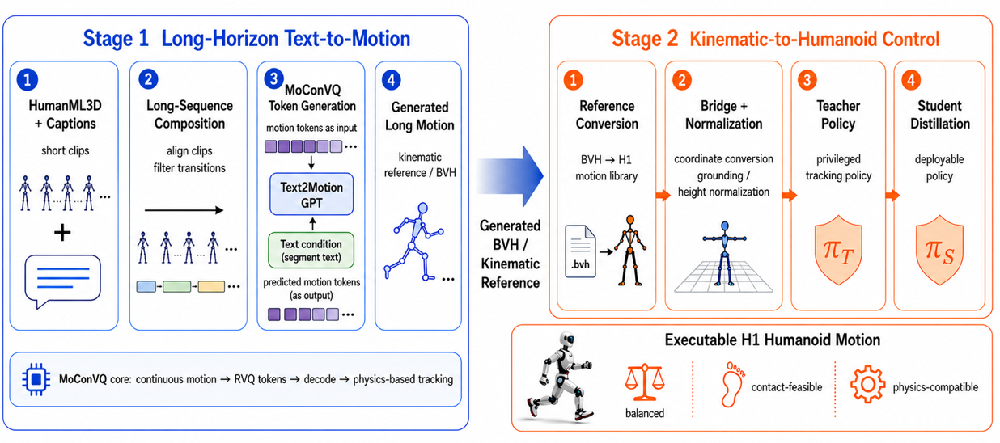

Generalization
0.11 -> 0.14
Long100 approximate R@2 improves on held-out test split prompts composed from three segments.
L-PHYM Motion Generation H1 Humanoid Control
This showcase summarizes the complete two-stage system: Stage1 turns long text prompts into reviewable long-horizon human motion, and Stage2 converts and retargets those kinematic references into physics-based H1 humanoid control.
Project Result
On Long100, Stage1 improves key trends across R@2, matching score, average length, early-stop rate, and root path. Stage2 further connects generated motions to H1 retargeting and teacher-student physics tracking, completing the path from reference motion to executable control.

The system-level workflow connects long-text motion construction, BVH-native processing, MoConVQ fine-tuning and inference, and the downstream path toward H1 physical execution.
Stage1 Visual Results
The original MoConVQ text GPT baseline is shown on the left; the Stage1 fine-tuned model is shown on the right.
Stage1 Evaluation
Metrics use an approximate T2M evaluator adapter. Generated BVH is first converted to the HumanML3D 22-joint / 263-d representation, and the evaluator consumes up to 196 frames, so these numbers are best used for trend and relative-change analysis.
| Metric | Suite | Baseline | Fine-tuned | Direction |
|---|---|---|---|---|
| FID, lower is better | Long100 | 7.0400 | 7.2092 | close |
| R@2, higher is better | Long100 | 0.11 | 0.14 | improved |
| Matching score, lower is better | Long100 | 5.0077 | 4.9591 | improved |
| Early-stop rate, lower is better | Long100 | 0.44 | 0.41 | improved |
| FID, lower is better | Val8 | 20.2790 | 14.9851 | improved |
| R@3, higher is better | Val8 | 0.625 | 0.875 | improved |
| Matching score, lower is better | Val18 epoch2 | 4.8802 | 4.7885 | improved |
| R@1 / R@3 | Long100 | 0.050 / 0.160 | 0.050 / 0.160 | tied |
Stage1 Method
The final route uses HumanML3D -> BVH -> MoConVQ native character retargeting. This BVH-native route lets HumanML3D long sequences enter the MoConVQ simulator observation and RVQ token space more naturally, providing a stronger data basis for segment-aligned GPT fine-tuning.
Compose multi-segment long sequences from HumanML3D clip captions while preserving original clip boundaries.
Use MoConVQ native MotionDataSet.add_bvh_with_character() to generate simulator character observations.
Cache RVQ indices, latent_vq, T5 text features, and segment-prefix metadata.
Fine-tune the text GPT with segment-prefix metadata, then run explicit segmented inference and evaluate generated BVH against the baseline.
Stage2 Humanoid Control
Stage1 outputs long kinematic references. Stage2 handles balance, contact, joint limits, and torque-compatible tracking: it converts generated BVH to AMASS-like references, retargets them to H1, and trains a teacher-student tracking policy to move from reference trajectories to physical control.
This video provides the Stage2 baseline comparison and shows the conversion path from generated reference motion to physical control. The controlled demos below show H1 execution after retargeting and policy learning.
A physical-control sample after H1 retargeting, showing how the teacher-student tracking policy executes generated motion references.
This sample highlights grounding normalization, joint-limit filtering, and tracking rewards for short-horizon stability.
An additional H1 execution sample that supplements the retargeting + policy learning control results.